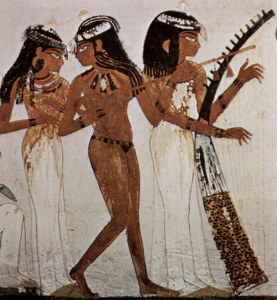
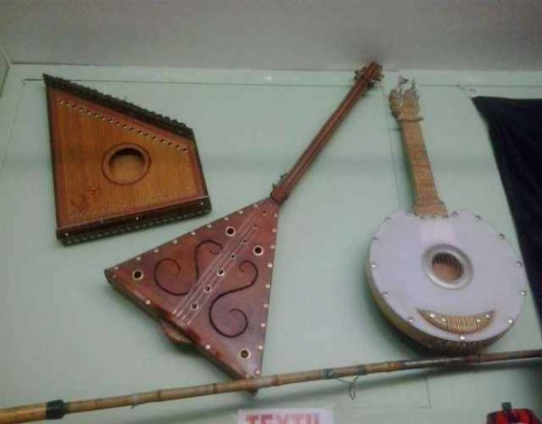

Un instrumento musical es un objeto compuesto por la combinación de uno o más sistemas resonantes y los medios para su vibración, construido con el fin de producir sonido en uno o más tonos que puedan ser combinados por un intérprete para producir música. Al final, cualquier cosa que produzca sonido armónico puede servir de instrumento musical, pero la expresión se reserva, generalmente, a aquellos objetos que tienen ese propósito específico.Existe la clásica división de los instrumentos en tres familias: viento, cuerda y percusión. Sin embargo, esta clasificación, al estar orientada a los instrumentos de la orquesta, deja de lado una serie de instrumentos que no caben dentro de ese ámbito. Es por esto que algunos estudiosos de la música amplían esta clasificación al sumar hasta tres categorías más, tales como la voz, los teclados y los instrumentos electrónicos.
Centrándonos en el sonido, que es lo que nos concierne ahora, el ser humano es conocedor, desde siempre, de la existencia de cientos de sonidos naturales diversos: algunos asociados a eventos agradables, otros asociados al peligro, etc. Son esos sonidos, pues, los que el hombre tiene como referencia cuando, en su afán y necesidad de comunicación, quiere ampliar su lenguaje: eso y su propio cuerpo (si queremos considerar éste como el instrumento más elemental y cercano productor de sonidos).
Ese cuerpo, que puede utilizar a modo de percusión (palmas, golpeteos o palmetazos en diversas partes del cuerpo para obtener diversas sonoridades) por una parte. Pero por otra, también posee la voz, con la que, además de emitir los sonidos básicos para la comunicación vital, también puede imitar sonidos de la naturaleza que conoce e, incluso, puede crear nuevas sonoridades, simplemente utilizando su aparato fonador para emitir sonidos originales, dentro de los límites que impone la voz y sus posibilidades , conocimientos e imaginación. He aqui una foto de instrumentos mas antiguos que los anteriormente mencionados.
En esta seccion, he compilado a los musicos mas importantes y relevantes de la historia:
Conocer a los mejores de la musica